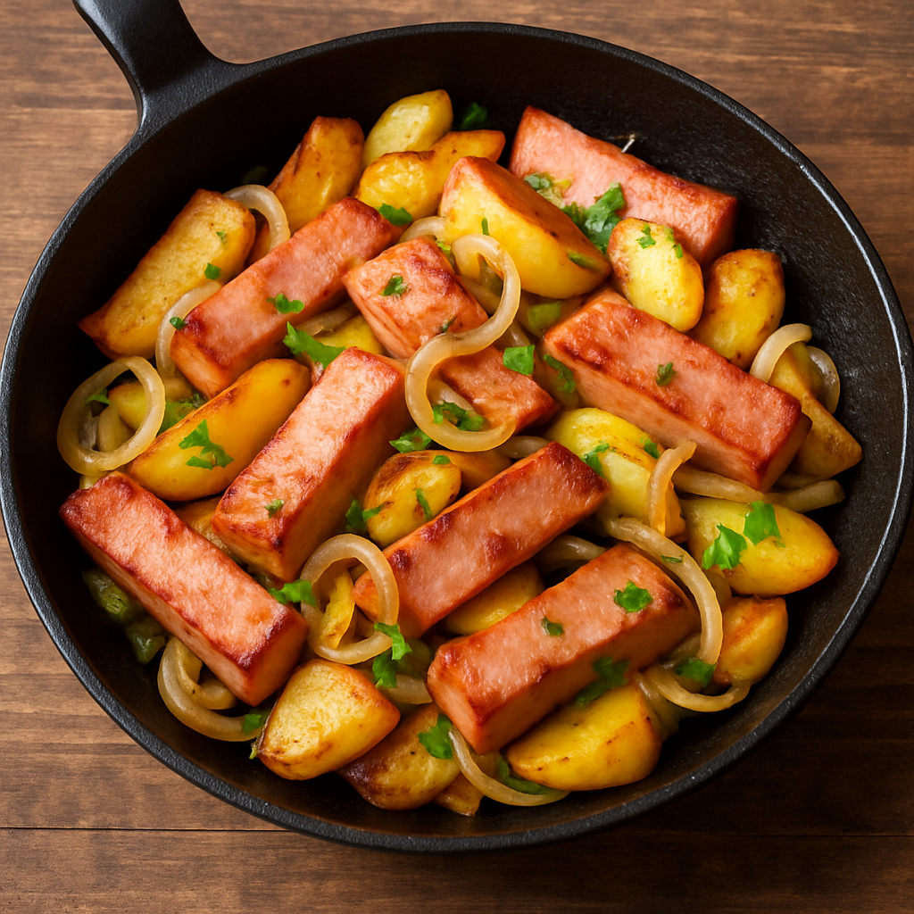

Matthias Leberkaspfanne
| 200 g Leberkäse |
| 20 g Speck, geräuchert |
| 1 Zwiebel(n) |
| 1.5 EL Öl |
| 200 g Kartoffeln |
| 125 g Lauch |
| 1 Paprikaschote(n) |
| 50 g Crème fraîche |
Zubereitung
ca. 25 Minuten
ca. 30 Minuten
55 Minuten
Den Leberkäse in kleine Stücke schneiden. Den Speck klein würfeln. Die Zwiebel schälen und in Ringe
schneiden.
2 EL Öl in einer Pfanne erhitzen. Den Leberkäse, Speck und die Zwiebel kräftig in der Pfanne anbraten.
Die Leberkäsemischung aus der Pfanne nehmen.
Die noch rohen Kartoffeln schälen und in kleine Stücke schneiden. 1 EL Öl in der Pfanne nochmals
erhitzen. Die Kartoffelstücke in die Pfanne geben und unter gelegentlichen Wenden ca. 20 Min. braten.
In der Zwischenzeit Lauch und die Paprikaschoten putzen und in kleine Stücke schneiden. Zu den
Kartoffeln geben.
Den Leberkäse nach 10 Min. zugeben und untermischen. Mit Salz, Pfeffer und Paprikapulver würzen.
Nochmals kurz anbraten
und zum Schluss die Crème fraîche dazugeben. Mit gehackter Petersilie bestreuen und sofort
servieren.
Rezept erstellt von
Matthias Wittl